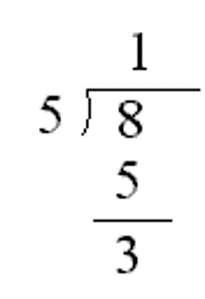

Think of a variable as a place to store a value that you will use later. Variables get their name because they
can vary or change. If you previously studied JavaScript or Python, you are going to notice something different
about Java. Variables have different types and every Java type has size limits. For example, integers are limited
to values between -2,147,483,648 and 2,147,483,647. Run the program below and you will get an error.
The program is attempting to print the integer 123456789101112131415 which is too large.
A good way to think of Java variables is like a parking space. Parking
spaces have different types that can accomodate different sized vehicles.
For this class, you need to know 5 basic (also called primitive) types: int float double boolean
and char.
int holds a single integer value between -2,147,483,648 and 2,147,483,647
float a decimal value with up to about 7 digits
double a decimal value with up to about 15 digits
boolean can only hold values that are either true or false
char holds a single letter, digit, space or punctuation mark and must be enclosed in single quotes,
like this: 'G'Parking spaces will contain different vehicles at different times, so some parking spaces are labeled to make it
easier to find your parking space later. It's the same for Java variables. In addition to a type every Java variable
has also has a name.
G210 is the name
of this parking spaceThe Java statement that names a variable is called a declaration. Here’s an example declaration
int num;public, class, static, void, int …
Because a Java variable name can’t have spaces, a style called camelCase is usually used for variable names
with more than one word. camelCase capitalizes the first letter of each word except the first word like
firstName or numberOfDogs. Java variable names are case-sensitive, so firstName is
not the same as firstname or FirstName.
Here's some other example declarations using the other primitive types:
float x;double taxRate;boolean isBig;char letter;
The English word initial means first. We initialize a variable by assigning (“setting it equal to”) its first value.
We can fix the error in the program by adding num=3; between lines 4 & 5. (Note it doesn't have to be 3,
we could use any integer between -2147483648 and 2147483647). Add an initialization between lines 4 and 5 and run the code
again to verify that the error is fixed.
You can declare and initialize a variable with one line of code like
int num = 3;The following program has 5 errors because the 5 variables are initialized incorrectly. Fix the five initializations so that the program runs without error. Remember that
int holds a single integer value between -2,147,483,648 and 2,147,483,647
float a decimal value with up to about 7 digits
double a decimal value with up to about 15 digits
boolean can only hold values that are either true or false
char holds a single letter, digit, space or punctuation mark and must be enclosed in single quotes,
like this: 'G'
Java divides decimals differently that it does integers. Run the following program and look at the results.
You've already seen the operators + - * /. There is another operater % called Modulus
(also Mod or Modulo) that calculates the remainder of dividing two integers. Remember how you first learned division
with a remainder in 3rd grade?

Run the following program and you will see that the expression 8/5 evaluates to 1 with no decimals.
Now add two more lines of code under line 8 that print the remainder of 8 divided by 5.
The code.org modelo clock widget is a good tool for understanding modulus. You may find it helpful in figuring out the result of the following expressions.
12/5
12%5
23/3
23%3
6/7
6%7
6%10
6%78912345Now write a program that displays the expressions and check your answers.
Initializations.java and Computus.javaThe following program has five error messages because the five variables have not been initialized. Initialize the variables so that the program runs without any error messages.
Write a second program that calculates and displays the date of Easter for a particular year. Easter Sunday is the
first Sunday after the first full moon of Spring. The calculation of the date of Easter is called Computus in Latin.
One algorithm for Computus was invented by mathematician Carl Friedrich Gauss in the early 1800s and is shown below.
Your program will declare and initialize 14 Test your program by using different years and googling the date of easter for that year. You can check your calculations with the following. For 2010 a, b, c, d, e, g, h, j, k, m, r, n, p should be 15, 20, 10, 5, 0, 6, 9, 2, 2, 0, 4, 4, 4.
Submit the links to your two finished programs by choosing
Share | Link. Go to Google Classroom and and then choose Add Link for each program.
Don't forget to click the Turn In button.
int variables y, a, b, c, d, e, g, h, j, k, m, r, n, and p.